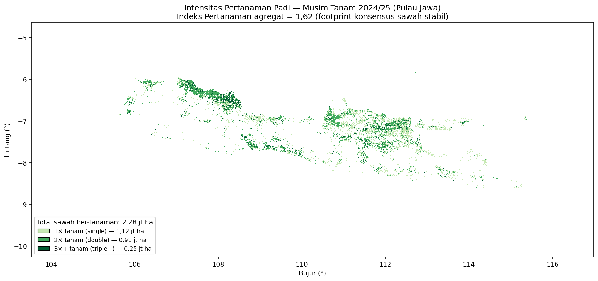

Indeks pertanaman
Menghitung siklus tanam: 1×, 2×, 3× per tahun
🌐 English → · Bahasa Indonesia
Gagasannya
Indeks pertanaman (intensitas tanam) menjawab berapa kali suatu lahan ditanami dalam satu tahun pertanian. Kita menurunkannya langsung dari deret waktu VH dengan penghitung siklus berbasis data: tanpa kalender tetap, tanpa ambang dB absolut.
Setiap siklus padi adalah ayunan lembah genangan → puncak kanopi. Sebuah mesin-keadaan (state machine) per piksel menelusuri deret waktu dan menghitung satu siklus setiap kali VH naik minimal sebesar amplitudo minimum (≈4 dB) di atas nilai minimum berjalan, lalu menyiapkan diri lagi setelah turun kembali. Jumlah siklus lengkap itulah indeks pertanaman untuk piksel tersebut (dilaporkan 1 / 2 / 3+).
Menghitung berapa periode sebuah piksel “tampak seperti sawah” cenderung melebih-hitung (kemiripan sesaat menggelembungkannya). Mensyaratkan ayunan amplitudo genangan→kanopi penuh berlandaskan fisika dan menolak artefak tersebut.
Langkah 1 — Validasi penghitung (opsional)
cropping_intensity.py dapat memeriksa kewajaran penghitung tervektorisasinya terhadap peta padi independen (kelas tunggal/ganda/tiga) sebelum dijalankan pada tumpukan Anda:
python cropping_intensity.py --mode validate \
--stack data/sample/klambu_vh_2024.tif # atau tumpukan multi-tahun Anda sendiriRata-rata siklus terdeteksi seharusnya meningkat secara monoton dari kelas referensi tanam-tunggal ke tanam-tiga — bukti bahwa penghitung mengikuti intensitas nyata. Keluaran terverifikasi pada tumpukan Jawa penuh:
Open-SEA CI=1: n=400 mean detected=1.77
Open-SEA CI=2: n=400 mean detected=2.06
Open-SEA CI=3: n=400 mean detected=2.31Langkah 2 — Hitung intensitas tanam pada AOI
Jalankan mode penuh pada tumpukan AOI Anda. Mask kandidat membuat hasilnya spesifik-padi — gunakan konsensus sawah Anda (disarankan) atau lapisan baku-sawah/kadaster; tanpa itu, gunakan --no-candidate (hanya siklus, kurang spesifik).
python cropping_intensity.py --mode full \
--stack <tumpukan-vh-multi-tahun-anda.tif> \
--candidate-mask consensus_sample/consensus_paddy_map.tif \
--output cropping_intensity_sample--mode full menghitung siklus pada jendela tahun-pertanian MT 2024/25, yang dibaca skrip dari pita 25–56 tumpukan gabungan 2024–2026. AOI sampel satu-tahun yang kecil (18 pita) tidak mencakup jendela itu — arahkan --stack ke tumpukan multi-tahun penuh Anda, atau ubah MT_BANDS di dalam skrip untuk rentang pita lain. Langkah --mode validate di atas memang berjalan pada sampel.
Pada sampel satu-tahun yang kecil, mask konsensus dalam-tahun (sedikit periode, ambang ketat) bisa hampir kosong, sehingga peta intensitas tanam di sini jarang dan hanya ilustratif — ia menunjukkan mekanismenya, bukan produk representatif. Untuk peta bermakna, gunakan lebih banyak periode dan tumpukan multi-tahun penuh.
Keluaran:
cropping_intensity_sample/
├── cropping_intensity.tif # uint8: 0 bukan-sawah, 1 / 2 / 3(=3+) tanam
├── paddy_mask.tif # 1 bila ≥1 siklus
└── statistics.txt # luas per kelas + indeks agregatstatistics.txt melaporkan indeks tanam agregat (rata-rata siklus pada sawah) dan luas ha di tiap kelas.
- Pita anomali ~0 dB (celah akuisisi/pemrosesan) terdeteksi dan diinterpolasi otomatis — dua pita semacam itu jika dibiarkan akan memalsukan ayunan kanopi tambahan dan menggelembungkan indeks.
- Luas piksel pada 50 m ≈ 0,25 ha; skrip memakai nilai ini, jadi luasnya benar.
Apa yang ditunjukkan studi penuh
Untuk Jawa pada MT 2024/25, indeks agregat adalah ≈1,62 pada tapak konsensus-stabil, dengan pola spasial yang jelas — tanam-tiga terkonsentrasi di sepanjang koridor aman-air (Pantura, Bengawan Solo).

Perbandingan antar-tahun pada piksel yang sama naik dari IP 1,45 (MT 2023/24) → 1,63 (MT 2024/25) — luas tanam nyaris tak berubah, tetapi intensitas meningkat (lebih banyak tanam-ganda dan tanam-tiga), konsisten dengan pemulihan air pasca-El-Niño. Sinyal itu — variabilitas iklim mendorong intensitas tanam — adalah bagian yang menarik secara ilmiah dari rekaman multi-tahun.
Memilih tapak (footprint)
Cakupan intensitas tanam bergantung pada mask kandidat yang Anda berikan:
- mask konsensus Anda → peta bersarang di dalam peta sawah Anda (disarankan, koheren);
- mask kadaster/baku-sawah → peta dipangkas ke tapak resmi;
--no-candidate→ siklus atas seluruh daratan (tidak menolak apa pun bukan-padi — gunakan dengan hati-hati).
Jaga agar tapak konsisten dengan peta sawah supaya kedua produk menceritakan satu kisah yang sama.
Berikutnya: ubah fenologi menjadi kebutuhan air dan hitung kinerja irigasi → Kinerja irigasi.